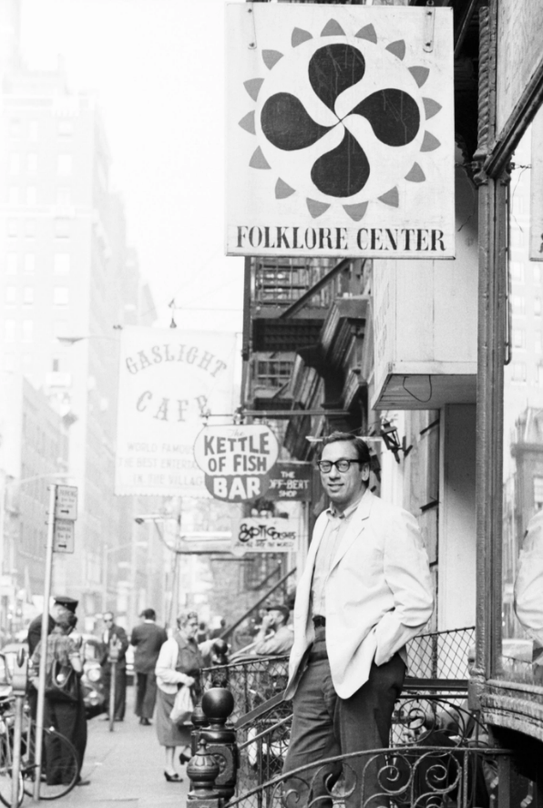

Dave Gahr Izzy Young Outside His “Folklore Center,” Greenwich Village, New York City 1963
Izzy Young, the founder of the Folklore Center and the early pater familias of the young and burgeoning “great folk scare” (as Dave Van Ronk called it) in the Village has died. Young established the Folklore Center on MacDougal St in 1957 and kept it open until 1973. During that time, he presented Bob Dylan in his first public concert, as well as performances by Van Ronk, Phil Ochs, Joni Mitchell, Joan Baez, Peter, Paul and Mary (Peter met Mary in the Folklore Center), John Sebastian and many others, as well as giving them a place to sleep when many of them were young and broke (as he often was, as he was a notoriously bad businessman).
Israel “Izzy” Young - 1928-2019 - Ave atque Vale